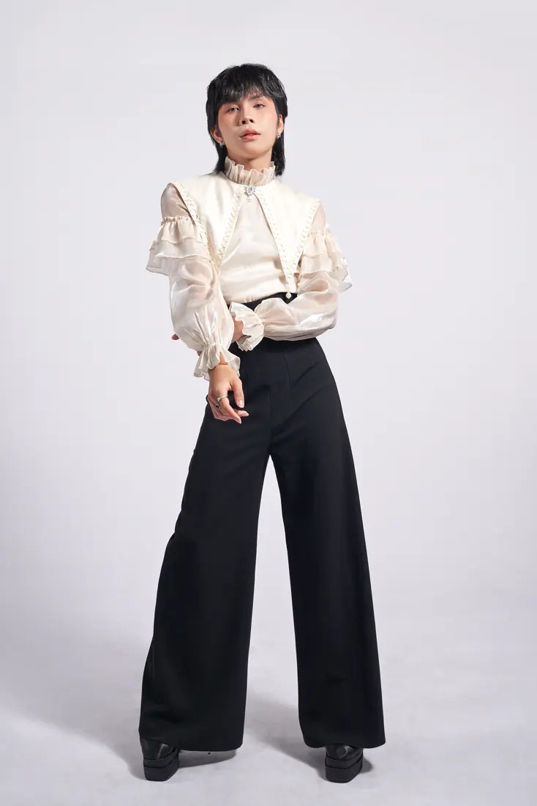
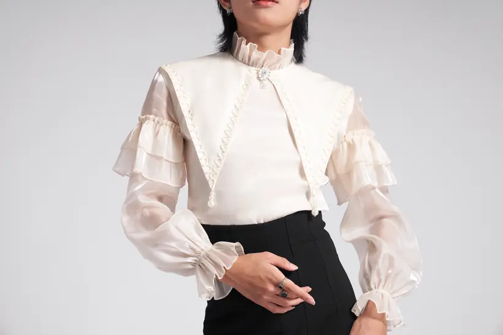
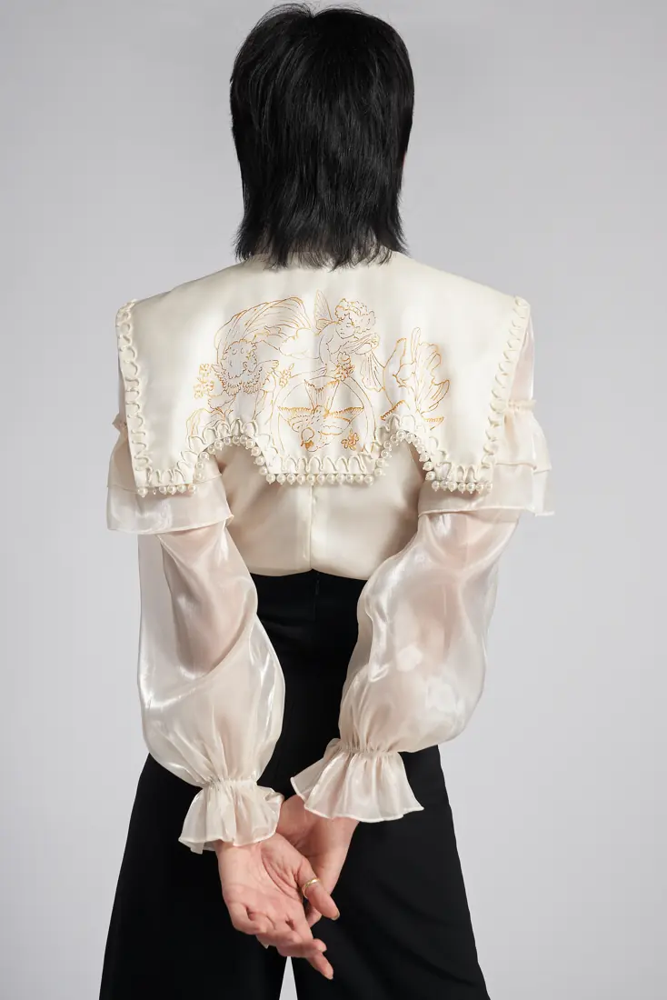
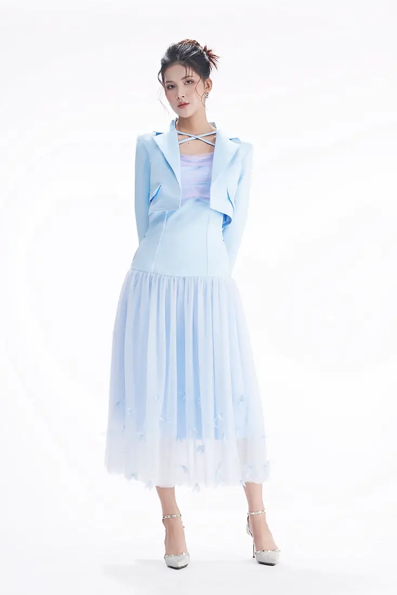
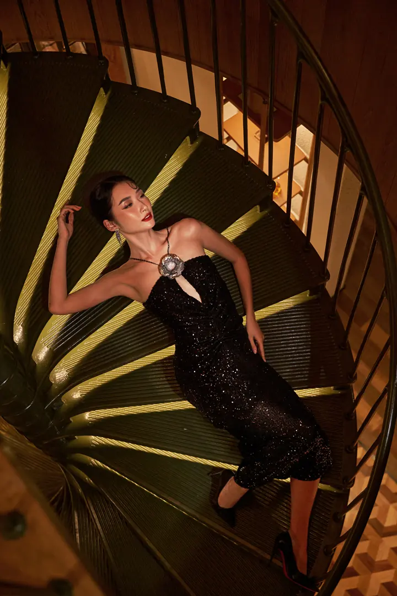
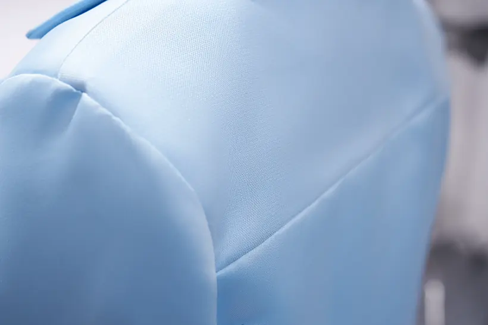

Đọc được trang phục
Khán giả thấy dáng, mặt trước/sau, lớp vải và chi tiết quan trọng.
Một bộ ảnh thời trang không chỉ cần một tấm thật đẹp. Buổi học này giúp bạn chuyển brief thành shot list, chuỗi hình ảnh có nhiệm vụ rõ ràng và một quy trình kiểm tra trước khi kết thúc buổi chụp.



Chiếu cùng một outfit 6 góc, sau đó thay bằng 6 ảnh pose gần giống nhau.
Bộ nào giúp khách hiểu trang phục hơn?
Không đồng nhất lookbook với catalogue bán hàng: nhiệm vụ ảnh có thể giao nhau nhưng mức độ sáng tạo khác.
Lookbook là cách giới thiệu trang phục qua nhiều khung có tính liên kết. Đầu ra phải vừa có giá trị hình ảnh, vừa giúp người xem hiểu sản phẩm.
Khán giả thấy dáng, mặt trước/sau, lớp vải và chi tiết quan trọng.
Ánh sáng, nhiệt độ màu, độ cao máy và cách trình bày đủ đồng nhất.
Không phải sáu ảnh đẹp giống nhau mà là sáu khung phục vụ sáu nhu cầu rõ ràng.
Đừng giải thích theo kiểu ba thể loại loại trừ lẫn nhau.
Nếu chỉ có 1 ảnh editorial đẹp, người mua có hiểu mặt sau không?
Bài buổi 08 lấy hệ thống lookbook làm chính, mượn tiêu chí e-commerce cho coverage.
Cả ba đều chụp thời trang, nhưng câu hỏi mà mỗi nhóm hình ảnh cần trả lời khác nhau.
Dáng, màu, chất liệu và các góc cần đối chiếu; ưu tiên dễ đọc và nhất quán.

Giới thiệu outfit/bộ sưu tập qua một chuỗi hình có phong cách thị giác nhất quán.

Tính kể chuyện, thái độ, tạo dáng và bối cảnh có thể được đẩy mạnh hơn.
Dùng brief một outfit cụ thể, cho học viên tự đề xuất shot list trước khi xem đáp án.
Nếu chỉ còn 10 phút, góc nào không thể bỏ?
Số ảnh giao luôn phải thống nhất với brief, không dùng 6 góc như luật cho mọi khách.
Một brief tối thiểu giúp bạn chọn góc và số ảnh trước khi chụp. Shot list là danh sách kết quả bắt buộc, không phải danh sách pose tùy hứng.
Mời một học viên chọn ảnh bắt buộc và giải thích tại sao.
Nếu không có ảnh mặt sau, chuỗi ảnh có thực sự đủ không?
Ảnh minh hoạ cho nhiệm vụ, không mặc định pose/mẫu chụp chính là định dạng bàn giao duy nhất.
Bấm từng ảnh để đọc mục tiêu chụp và điểm cần kiểm tra. Tất cả ảnh minh hoạ ở đây thuộc cùng một bộ trang phục, giúp học viên so sánh chính xác.
Đọc dáng tổng thể
KIỂM TRA: Giữ đủ đầu và giày
Cho học viên tự đánh dấu điểm thiếu của một contact sheet.
Ảnh nào mang thông tin hoàn toàn mới?
Không yêu cầu crop từ một ảnh duy nhất thay thế toàn bộ hệ thống góc chụp.
Sáu ảnh tương tự nhau có thể thiếu mặt sau, chi tiết hoặc phom. Ngược lại, sáu ảnh làm đúng sáu nhiệm vụ thường có giá trị hơn.
Trên set, thiếu một góc quan trọng là lỗi khó khắc phục bằng hậu kỳ.
Cho học viên lướt nhanh ba ảnh.
Ảnh nào nhìn lệch màu hoặc độ sáng?
Không phải mọi ảnh phải dùng cùng tiêu cự/góc máy. Nhất quán là cảm giác bộ ảnh và tiêu chí sản phẩm, không là thông số cứng.
Giữ cố định những yếu tố cần nhất quán; chỉ thay những yếu tố phục vụ góc chụp. Đặc biệt chú ý cân bằng trắng, mức sáng, tỷ lệ trang phục và nền.
Làm mốc cho chiều cao máy, khoảng cách, độ sáng và cân bằng trắng.
Kiểm tra màu áo và mức tương phản vẫn phù hợp bộ ảnh chính.
Chụp được thiết kế phía sau mà không tự ý đổi chất lượng sáng/màu.
Trước một khung, cho học viên nói một lỗi outfit có thể xảy ra.
Bạn có nhìn thấy nhãn/móc, túi phồng hoặc nếp áo lệch?
Stylist điều chỉnh trang phục với sự đồng ý của mẫu, tránh chạm người mẫu bất ngờ.
Những lỗi nhỏ tại set có thể khiến ảnh không dùng được: cổ gập, tay xoắn, cạp quần xô lệch, nhãn lộ, phụ kiện che thiết kế.
Vuốt nếp, kiểm tra lớp voan và phần cổ ngay trước khi bấm.

Chọn đúng chi tiết cần chứng minh, không chụp cận ngẫu nhiên.
Ảnh mặt sau cũng cần chính xác về nếp vải và vị trí tay.
Vẽ sơ đồ trên sàn hoặc dùng băng giấy đánh dấu vị trí.
Nếu thay vị trí máy, chỗ nào có thể thay đổi phối cảnh?
Không dạy giữ nguyên tiêu cự/khoảng cách trong tất cả 6 ảnh.
Một sơ đồ studio đơn giản giúp giảng viên giải thích vị trí máy, người mẫu, phông và nguồn sáng khi thay đổi góc.
Chọn vị trí chuẩn cho ảnh toàn thân. Khi vào trung cảnh hoặc chi tiết, có thể thay khoảng cách và tiêu cự, nhưng cần kiểm tra lại tỷ lệ, nền và ánh sáng.
Đưa các mẫu vải thật cho học viên sờ, bóp, ngắm dưới một nguồn sáng.
Vì sao cùng một đèn nhưng satin và voan khó chụp giống nhau?
Đọc đúng chi tiết quan trọng; không giới thiệu một công thức ánh sáng cho mọi loại chất liệu.
Đây là kiến thức mới của Buổi 08: nhìn chất liệu như một yếu tố sản xuất. Chụp được da đẹp chưa chắc đã thể hiện được đúng vải.
Với vải mỏng cần phân biệt lớp trong–ngoài; tránh bóng gắt hoặc nền làm vải hòa lẫn.
CÁCH XỬ LÝ NGAY TẠI SETĐiều chỉnh góc đứng và mức độ chồng lớp; thử chiếu sáng để thấy độ xuyên sáng.
Chụp/look A làm chuẩn; cho học viên chuyển/look B và so hai khung song song.
Tại sao phải giữ màu nền nhưng không cần giữ một kiểu pose?
Hai ảnh ví dụ có thể chụp trong các điều kiện khác nhau; chúng dùng minh hoạ cách kiểm tra chứ không chứng minh một set thật hoàn toàn đồng nhất.
Khi đổi trang phục, điều gì phải được khóa để ảnh thuộc cùng một bộ, và điều gì cần đổi để làm rõ thiết kế riêng của outfit?
Chốt chiều cao người trong khung, phông, nhiệt độ màu, độ sáng nền và phong cách tạo dáng trung tính.
Không ép cùng dáng pose, nhưng cần kiểm lại tỉ lệ, màu nền, ánh sáng và những tiêu chuẩn đã chốt với bộ ảnh.
4 / 6 tiêu chí đã đánh dấu
Chọn nhóm pose, bấm vào một card và dùng câu chỉ đạo cụ thể thay vì yêu cầu “đứng nghệ hơn”.
Tại sao pose này phù hợp với trang phục đang chụp? Chi tiết nào dễ bị che khi đổi động tác?
Không bắt học viên ghi nhớ toàn bộ 20 động tác. Dạy 1–2 pose mẫu mỗi nhóm, sau đó để học viên tự chọn theo brief và kiểm tra trang phục.
Chọn nhóm pose theo mục đích chụp, sau đó bấm vào từng card để xem mini tips. Không cần đưa cả bảng tạo dáng vào bài giảng: nhìn một động tác, chỉ đạo một thay đổi, rồi kiểm tra phom trang phục.
Chọn nhóm để xem danh sách động tác. Chạm ảnh hoặc nút Xem tips để mở hướng dẫn riêng cho từng pose.
6 pose chuẩn để chốt ảnh an toàn trước khi biến tấu.
Đọc trọn phom quần và thân áo.
Đứng thẳng, vai thả lỏng, mắt nhìn ngang ống kính.
Hai chân tách đủ để thấy ống quần; vạt và gấu không bị che.
Đứng gồng, khóa gối, tay áp quá sát hông.
Nhìn rõ độ ôm và chiều sâu trang phục.
Xoay người khoảng một phần tư vòng, mặt quay nhẹ về máy.
Đường vai, đường sườn và tay áo vẫn đọc được.
Xoay quá mạnh khiến áo và hai chân chồng nhau.
Nhấn vị trí eo mà không làm méo sản phẩm.
Đặt tay hờ lên hông; khuỷu tay mở vừa đủ.
Eo quần, đai và túi vẫn rõ; ngón tay mềm.
Ép tay quá mạnh hoặc che thắt lưng và túi.
Dẫn ánh nhìn đến cấu trúc cổ, vai và tay áo.
Đưa đầu ngón tay chạm nhẹ đường cổ, thả vai.
Cổ áo giữ đúng phom, không bị kéo nhăn.
Kéo vải hoặc che mất chi tiết cổ áo.
Tạo cảm giác đi mà dáng quần vẫn rõ.
Bước một bước ngắn rồi giữ nhịp ở giữa bước.
Ống quần có độ mở; giày và chân không bị che.
Bước quá dài khiến vải xoắn hoặc mất nét.
Tạo nhịp và chiều sâu từ đường vai.
Giữ hông gần nguyên, xoay nhẹ vai và đầu ngược nhau.
Đường vai gọn; chân vẫn tạo dáng rõ ràng.
Vặn thân quá mạnh hoặc mất cân bằng.
4 biến thể giúp ảnh có nhịp mà vẫn đọc được trang phục.
Tạo nhịp bằng trục cơ thể và chuyển trọng lượng.
Dồn trọng lượng lên chân trụ, nghiêng nhẹ thân, mở một tay.
Tay không che áo; chân trụ ổn định, gấu quần rõ.
Nghiêng quá mức làm dáng trang phục bị lệch.
Biến động tác xoay thành một khung có nhịp.
Đổi hướng vai, giữ mắt về một điểm, chờ vải ổn định.
Tay và cổ áo không che nhau; nếp vải có nhịp.
Xoay liên tục không có khoảnh khắc dừng.
Dùng cánh tay và chân tạo nhịp thị giác mạnh.
Tạo hai hướng khác nhau cho tay và chân rồi giữ 1 nhịp.
Đường cong có chủ ý và phần vải vẫn dễ nhận ra.
Tư thế phức tạp che mất sản phẩm.
Đổi đường nét bằng tư thế thấp và thế chân mở.
Hạ trọng tâm chậm, đặt tay để cân bằng thay vì chống gồng.
Phom quần không căng bất thường, áo không bị xoắn.
Gối che chi tiết, tay gồng hoặc nếp gãy mạnh.
6 dáng ngồi dùng ghế, bục và bàn như điểm tựa.
Giữ dáng áo và cạp quần rõ khi ngồi.
Ngồi gần mép bục, nâng thân, thả vai, tay đặt trên đùi.
Vạt áo, cạp và đường chân không bị che.
Ngồi sụp lưng hoặc kẹp hai tay vào thân.
Tạo chiều sâu từ góc thân và hướng mặt.
Xoay hông nhẹ, chống tay rất hờ lên đầu gối.
Đường sườn, gối và ống quần tách rõ.
Tỳ khuỷu quá mạnh làm xô lệch cổ áo.
Dùng ghế như điểm tựa thay vì đạo cụ che đồ.
Tựa hờ một tay; giữ ngực mở và cổ dài.
Tay áo, eo, phần váy/quần không bị thành ghế che.
Ngả lưng quá sâu khiến cổ áo bị kéo lệch.
Tạo nhịp chân nhưng vẫn đọc được phom quần.
Vắt chéo nhẹ từ cổ chân hoặc đầu gối, giữ thân cao.
Không làm ống quần vặn xoắn hay che gót.
Vắt chặt khiến nếp quần gãy và chân ngắn.
Thêm điểm tựa tạo đường chéo và cảm giác tự nhiên.
Đặt lòng bàn tay hờ lên cạnh bàn, hạ một vai vừa phải.
Tay không kéo vai áo; đường chân có khoảng thở.
Đặt quá nhiều trọng lượng lên cổ tay.
Thêm cảm xúc nhưng không cần đổi tư thế lớn.
Nghiêng đầu rất nhẹ và đưa tay gần má, tránh ép mặt.
Cổ áo, tóc và bàn tay không che điểm thiết kế.
Tỳ tay làm biến dạng má, gập cổ quá sâu.
4 động tác tay để xử lý phần cổ, eo, đường may và mặt sau.
Dẫn mắt về phần eo và cấu trúc dáng.
Đặt tay hờ lên eo, ngón tách tự nhiên.
Không che khóa, khuy, đai hoặc túi.
Bàn tay bấu mạnh, cổ tay gập cứng.
Dẫn mắt lên cổ và đường vai trang phục.
Chạm đầu ngón vào mép cổ mà không kéo vải.
Cổ áo đứng form, tay áo không nhăn.
Ngón tay che mất đường cắt cổ áo.
Tạo tương tác nhẹ với áo và đường may thân.
Đưa một tay sát eo, thả ngón tay và hạ vai.
Nếp bèo, cúc và đường may không bị che.
Tay che chi tiết hoặc tạo lực kéo lên vải.
Tập trung vào mặt sau, vai và phần tay áo.
Đưa hai tay nhẹ về phía sau, chỉ chạm nhau hờ.
Đường vai, tay áo và chi tiết lưng vẫn đọc được.
Nắm tay quá chặt khiến vai nhô hoặc áo căng.
Bắt đầu từ pose an toàn, sau đó chỉ thay một yếu tố: trọng tâm, vai, tay hoặc nhịp chân. Khi xem lại, kiểm tra cổ áo, tay áo, phom và giày trước khi đổi pose tiếp.
Yêu cầu mỗi nhóm xác định hai tiêu chí pass/fail cho một ảnh thương mại và một ảnh hero.
Ảnh nào có thể dùng để người mua hiểu bộ quần áo? Ảnh nào dùng làm visual chiến dịch?
Hai ảnh là hai nguồn ví dụ minh hoạ vai trò, không phải cùng một outfit được xử lý thành hai phiên bản.
Từ một outfit, nhiếp ảnh gia phải biết chọn một khung “an toàn thương mại” và một khung có sức hút thị giác — không để ảnh hero thay thế bộ ảnh sản phẩm.
Ưu tiên nhìn rõ đường nét, độ dài, chi tiết quan trọng và màu vải. Mẫu không che sản phẩm; nền không tranh điểm nhìn.
Được phép bố cục mạnh, pose lớn và có bối cảnh, miễn vẫn làm nổi đúng trang phục hoặc tinh thần của bộ.
Đọc tình huống rồi cho học viên biểu quyết sửa ngay hay để hậu kỳ trước khi hiện kết luận.
Nếu khách cần ảnh vào chiều nay, bạn có dùng ảnh này được không?
Các quyết định là hướng dẫn cơ bản, vẫn cân nhắc mức độ lỗi và khả năng chỉnh sửa thực tế.
Không chỉ rà ảnh — phải đưa ra quyết định ngay khi còn đầy đủ người mẫu, trang phục, ánh sáng và thời gian.
Không thể tạo thông tin mặt sau chính xác bằng crop hay chỉnh màu.
Phát hiện ở bước đối chiếu shot list; chụp mặt sau trước khi đổi look.
Ưu tiên giữ thông tin sản phẩm đúng. Retouch không thay thế việc thiếu góc, sai focus hoặc sai hình dạng trang phục.
Yêu cầu học viên kiểm tra ảnh phóng lớn ngay trên màn hình máy.
Ảnh này có lỗi nào khiến không thể bàn giao không?
Độ nét và màu đánh giá ở kích thước phù hợp, không chỉ ở thumbnail.
Sau mỗi thay đổi tư thế hoặc ánh sáng, cần rà nhanh độ nét, màu, chất liệu và phần trang phục quan trọng.
Ảnh mặt trước, mặt sau, trung cảnh, detail và ảnh điểm nhấn có đủ không?
Nhãn, nếp vải, cổ/tay áo, phụ kiện có lỗi không?
Mắt và phần sản phẩm cần rõ có bị out focus hay nhòe?
WB, độ sáng và màu vải có nhất quán giữa các góc?
Vật thể, mép phông, nếp phông và bóng không mong muốn?
Hai ảnh có thực sự bổ sung thông tin hay chỉ khác pose?
Tối thiểu dành hơn một phần ba buổi cho học viên tự chụp và kiểm tra.
Bao nhiêu thời gian bạn cần để sửa góc thiếu?
Nghỉ vào phút 55–65 theo lịch này; có thể linh hoạt theo setup của lớp.
Phần shot list chỉ ôn nhanh. Thời gian chính dành cho xử lý chất liệu, tính đồng nhất qua hai outfit, model direction và quyết định chụp lại ngay trên set.
Brief, các đầu ảnh và coverage đã biết.
Đọc vải, chỉnh outfit, kiểm soát phom.
Đổi look nhưng giữ tiêu chuẩn bộ ảnh.
15–20 phút: 4 bộ pose, chỉ đạo vi mô; phân biệt ảnh thương mại và hero.
Chuẩn bị lượt chụp hai outfit.
2 outfit × 6 ảnh, kiểm QC sau từng look.
Chọn ảnh, quyết định chụp lại và bàn giao.
Cho học viên tự tích sau khi so ảnh chụp trên máy, không tích trước.
Góc nào đã có nhưng không đạt để bàn giao?
Bảng chỉ quản lý 6 đầu ảnh tại trình duyệt, không phải dữ liệu được lưu trên server.
Cùng 6 nhiệm vụ nhưng lặp qua 2 outfit. Đánh dấu chỉ sau khi đã chụp và kiểm tra. Bảng demo không lưu lên server.
Đánh dấu sau khi bạn đã chụp và kiểm tra ảnh tương ứng. Đây là quy trình QC của nhiếp ảnh gia, không phải danh sách để tích cho đủ số lượng.
Cho từng học viên chọn một khung còn yếu và nói cách sửa nếu chụp lại.
Nếu bộ ảnh này được giao cho khách, họ còn phải xin thêm ảnh gì?
Buổi sau xử lý hậu kỳ, không thay thế việc chụp thiếu góc.
Buổi 09 sẽ chọn ảnh và làm việc với RAW. Chất lượng đầu vào và đủ shot quyết định bạn có thể hoàn thiện bộ lookbook hay không.
Một ảnh cho mỗi nhiệm vụ chụp; đặt tên rõ theo loại góc, không làm thay đổi màu vải bằng preset.
Đặt toàn bộ ảnh cạnh nhau để nhìn sự đồng nhất về sáng, màu, form và nhịp hình.
Nêu góc tốt nhất, góc còn thiếu và ba điểm cần xử lý ở Buổi 09 Lightroom/Camera Raw.